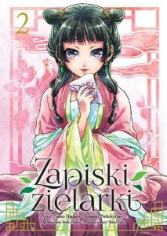

TOP 3 NAJCZĘŚCIEJ CZYTANE TYTUŁY
TOP 1

282389796 wyświetleń
TOP 2

232456677 wyświetleń
TOP 3
128473552 wyświetleń
NASZE POLECAJKI
REQUIEM OF THE ROSE KING
Anglią wstrząsa wojna domowa – dwa potężne rody, Yorkowie i Lancasterowie, walczą o to, kto zasiądzie na tronie. W tych mrocznych czasach ważna rolę do odebrania będzie mieć Ryszard, trzeci syn przywódcy Yorków. Chłopak już od samych narodzin skazany był na cierpienie, zaś pole bitwy nie jest miejscem dla niego, lecz ten, kto już raz wejdzie na ścieżkę wytyczona przez przeznaczenie, choćby chciał nie może z niej zejśc… Przygotujcie się na mroczną historię z elementami fantasy, inspirowana twórczością samego Williama Szekspira.
ATAK TYTANÓW
Oto świat niemal w całości opanowany przez tytanów. Świat, w którym niedobitki ludzkości schroniły się za masywnymi murami, by nie skończyć jako pożywienie tych potężnych, przerażających istot... Od tamtych wydarzeń minęło ponad sto lat. Przez ten czas tytani ani razu nie przypuścili ataku na mury. Jednak pewnego dnia ten pozorny pokój zostaje brutalnie przerwany. Oto bowiem wróg powrócił, a ludzkość czeka straszliwa batalia o przetrwanie...
DOGS
Gdzieś w przyszłości, gdzieś w Europie, miasto ma wiele poziomów podziemnych, tajnych, niebezpiecznych poziomów, które mają odpowiedzi na przeszłość. Mihai jest emerytowanym zabójcą, który wrócił do domu, aby załatwić zemstę i rozpocząć nowe życie jako właściciel restauracji. Haine był genetycznie eksperymentowany jako dziecko, co doprowadziło do posiadania atrybutów podobnych do psa. Badou jest jego niezdarnym partnerem do palenia papierosów, który staje się obłąkany, gdy odmawia się mu papierosów. Naoto został osierocony jako dziecko i ma amnezję, został przeszkolony do władania mieczem. Ich przeszłość jest w jakiś sposób powiązana z tajnym podziemiem i organizacją, która je kontroluje.